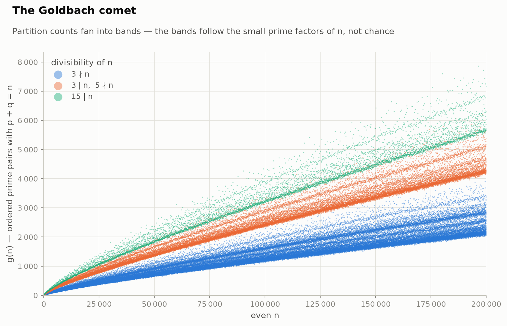
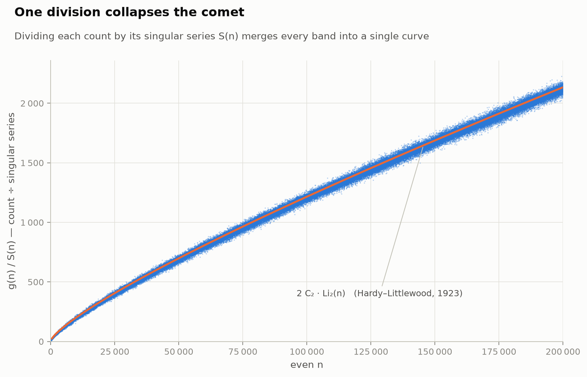
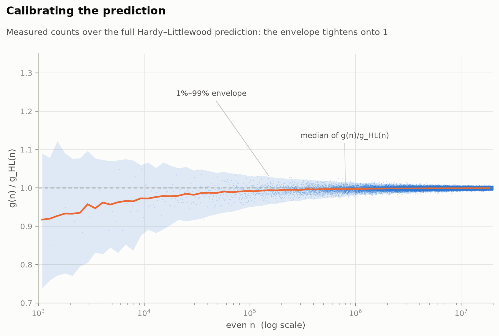
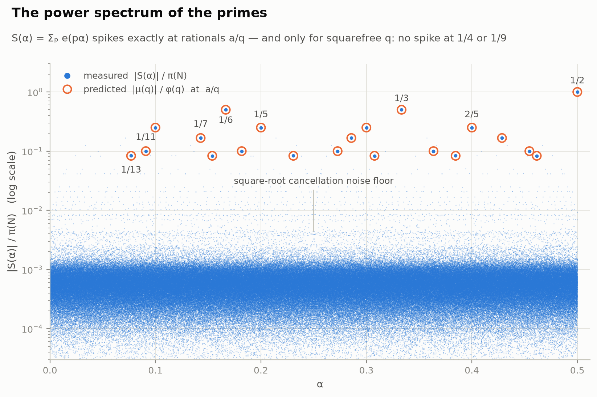
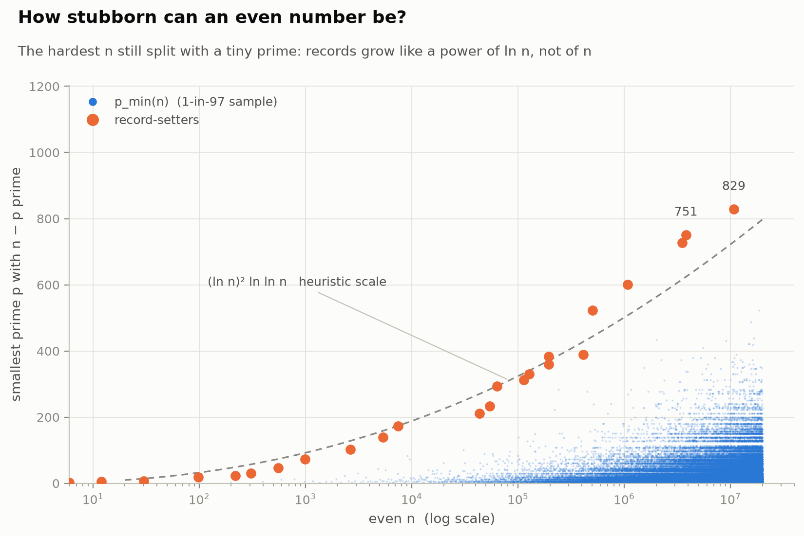
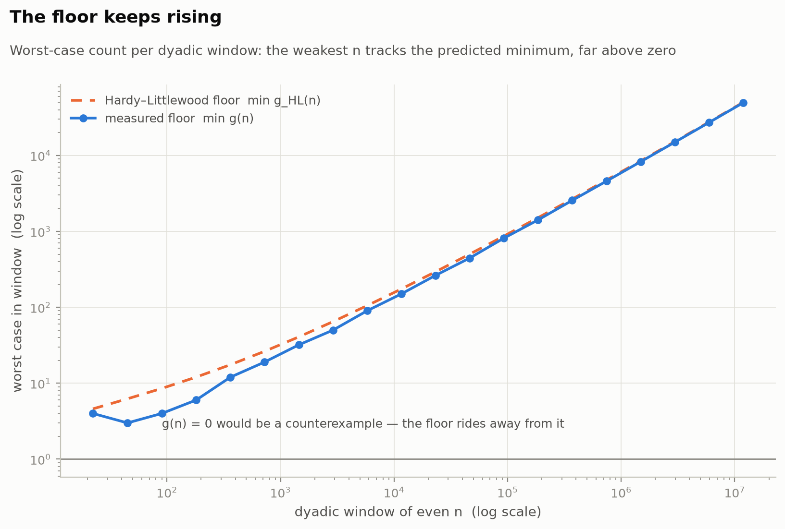
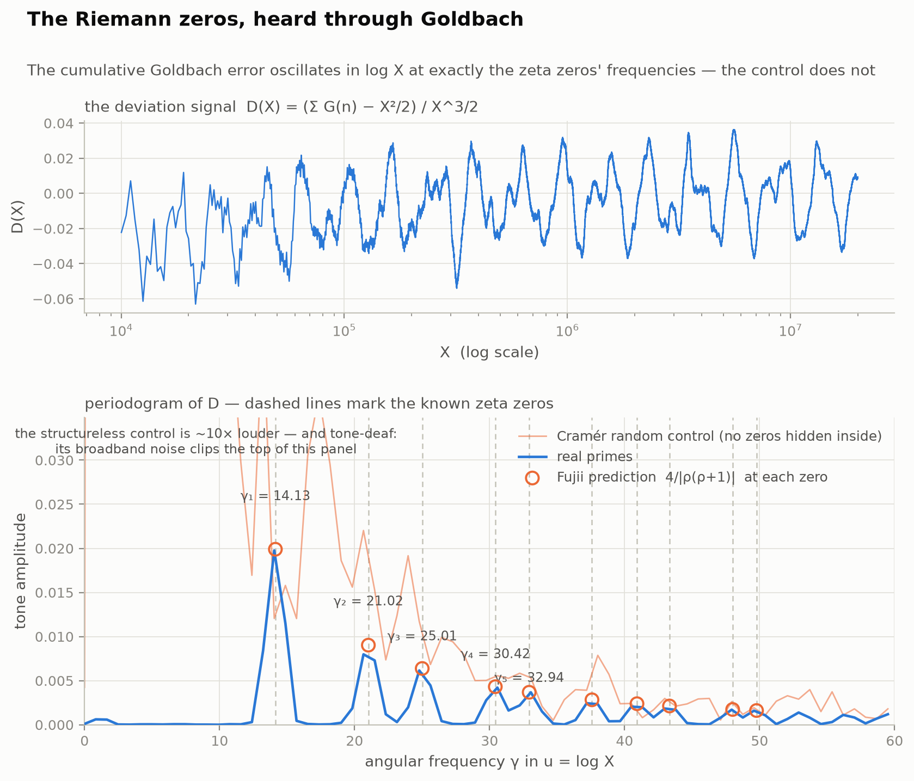

Goldbach: instruments, not incantations
Fast tools for measuring the structure of the Goldbach conjecture — every claim labeled theorem, heuristic, or measurement.
The instrument
One FFT photographs every Goldbach count at once
The number of ways to write n as a sum of two primes is the autocorrelation of the prime indicator, so a single FFT computes all ten million counts up to N = 20,000,000 in seconds — exactly (worst floating-point residual 1.7·10−10 against an exactness threshold of 0.5, unit-tested against brute force). It is the circle method made executable: the FFT of the primes is the exponential sum S(α), and the counts are the inverse transform of its power spectrum.
Experiment 1
The comet's bands are arithmetic, not chaos
Partition counts fan into separated bands. Color by the small prime factors of n and the mystery dissolves: n divisible by 3 has roughly twice the partitions, because n − p then dodges one residue class of collisions.

Experiment 2
One division collapses the comet
Divide each count by its singular series S(n) — Hardy and Littlewood's 1923 arithmetic correction — and every band merges onto the single smooth curve 2·C₂·Li₂(n). Nothing about the comet's shape is left unexplained.

Experiment 3
The 1923 prediction calibrates to 1%
Measured over predicted, for every even n to 2·10⁷: the median ratio at the top of the range is 0.9992, and 98% of even numbers land within [0.990, 1.007]. The envelope tightens exactly at the square-root rate the model itself expects.

Experiment 4
The power spectrum of the primes
|S(α)| measured exactly on a 720,720-point grid: spikes at every rational a/q with the predicted height |μ(q)|/φ(q) — present only for squarefree q (no spike at 1/4 or 1/9, as the Möbius factor demands), over a square-root-cancellation noise floor. The spikes are what proves Goldbach's main term; the floor is what nobody can control for the binary problem. The entire difficulty of the conjecture is visible in this one image.

Experiment 5
How stubborn can an even number be?
pmin(n) is the smallest prime that splits n. Up to 2·10⁷ the all-time record is 829, at n = 10,759,922 — an eight-digit number split by a three-digit prime. Records track (ln n)²·ln ln n, and the list reproduces OEIS A025018/A025019.

Experiment 6
The floor keeps rising
Per dyadic window, the weakest even number's count rides the predicted minimum — within 1.2% at the top window, with 49,382 representations for the worst case. Evidence for belief, and simultaneously a demonstration that computation alone can never finish the job.

Experiment 7
The Riemann zeros, heard through Goldbach
Weight the primes the way ζ does, cumulate the Goldbach counts, subtract the main term X²/2, rescale — and the residue is not noise. Its periodogram in log X shows tones at 14.13, 21.02, 25.01, 30.42, 32.94… — the imaginary parts of the Riemann zeta zeros — with amplitudes matching Fujii's explicit formula to ~1% at the first and fifth zeros (template-shift significance test: empirical p = 0). A random "fake primes" control of identical density is ten times louder and tone-deaf. The primes are quieter than chance, and what remains of their sound is precisely the zeros of ζ: the Goldbach error term is not noise — it is music.

Honesty
What this does and doesn't establish
Everything measured behaves exactly as the Hardy–Littlewood model predicts, within fluctuations the model itself anticipates. That is strong evidence the conjecture is true, and zero progress toward proving it — those are different things. The precise walls (the L² barrier on the minor arcs, the parity barrier for sieves) are mapped in THEORY.md; the ongoing hypothesis hunt lives in RESEARCH_LOG.md.